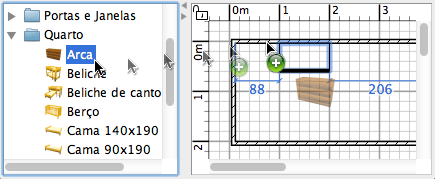

| Adicionar portas, janelas e mobília | |||
Para adicionar portas, janelas ou mobília à sua casa, arraste e largue objectos do catálogo ou lista de mobília para a planta, um por um.  Pode também seleccionar uma ou mais peças no catálogo e depois escolher Mobília > Adicionar à casa ou clicar na ferramenta Adicionar mobília seleccionada do catálogo à casa Quando as peças são largadas na lista de mobílias ou adicionadas pelo Menu
Mobília > Adicionar à casa, a localização do seu canto superior esquerdo está no ponto (0, 0). As peças adicionadas à casa são seleccionadas e desenhadas simultaneamente na lista de mobília, na planta e na vista 3D. Durante o tempo de carregamento das peças adicionadas no modelo 3D, estas peças são representadas como uma caixa branca na vista 3D. Se quiser adicionar uma peça a um grupo de mobília existente, seleccione o grupo destino e escolha Mobília > Adicionar ao grupo. |
|